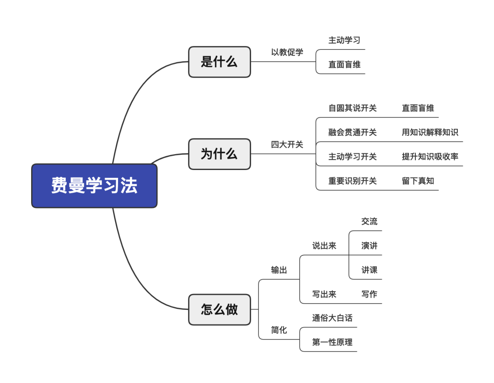

大学的时候，不知道什么狗屎运，突然就和朋友决定了写作。
我当时还不知道，它将给两年后的我带去多大的成长。
那时就是单纯的想分享自己的所思所想，最多加上个人IP的传播。现在看来，IP是由时间、运气和
能力决定的，但是成长才是最大的意外之喜。
后来接触的东西多了之后，我才明白这叫输入输出，输入帮助输出，输出倒逼输入。
再后来，我听《吴伯凡认知方法论》的时候才恍然大悟，它的背后其实就是费曼学习法。
从此，我就在心里做了个决定，我要写一辈子。
经常会有读者来询问我的五维学习法，其中一维就是这个费曼学习法（有的人叫它费曼技巧）。
